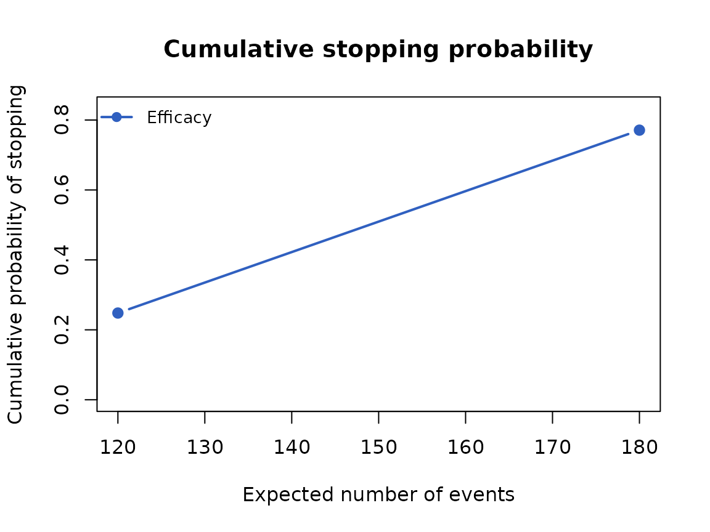
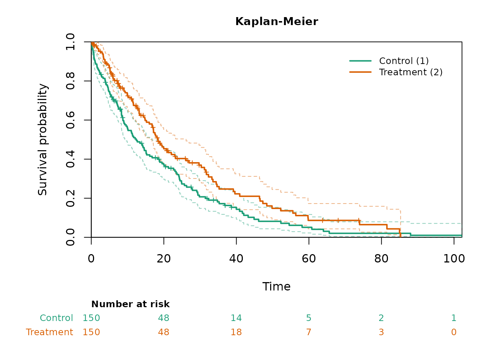

Overview
A simulation study of a time-to-event trial has three steps: generate
the trials, analyze each of them at its looks, and summarize the
operating characteristics over the trials. In FastSurvival these steps
are simdata_fast(), analysis_fast(), and
simsummary_fast(), the simulation trio, and each of them
takes the result of the previous step as its first argument. A study can
therefore be written as one chain with the native pipe
|> of R, read from top to bottom in the order of the
steps. cutoff_fast(), switch_fast(), and
pairwise_fast() fit into the same chain.
The pipe changes only how the calls are written:
x |> f(y) is the call f(x, y), so a chain
gives the same results as nested calls or calls with intermediate
objects, and the tests of the package check this for every function. The
code below uses only syntax of R 4.1, the version that the package
requires: the pipe |>, functions written as
function(x) or in the short form \(x), and no
placeholder _, which needs R 4.2 and is not needed here
because the data always go to the first argument.
One chain from data to operating characteristics
The trial randomizes 150 patients per group over 12 months. The median time to event is 12 months in the control group (group 1) and 18 months in the experimental group (group 2), and 1 percent of the patients per month drop out. The log-rank test is performed at 120 and 180 events, one-sided, with the nominal levels 0.003 and 0.024 at the two looks. These levels are only for illustration; the vignette Group sequential design with the simulation trio obtains such levels from a spending function with gsDesign.
oc <- simdata_fast(nsim = 1000, n = c(150, 150), a.time = c(0, 12),
a.rate = 300 / 12, e.median = list(12, 18),
d.hazard = 0.01, seed = 1) |>
analysis_fast(control = 1, event.looks = c(120, 180), side = 1) |>
simsummary_fast(p.col = "logrank.p", alpha = c(0.003, 0.024))
oc
#> Group-Sequential Operating Characteristics (simsummary_fast)
#> Simulations: 1000
#> Boundaries: nominal p-value on 'logrank.p'
#>
#> Stopping Boundaries: Look by Look
#> Look Info. Frac. Events (s) Sample (n) Nominal p Cum. Cross. Eff.
#> 1 0.67 120.0 300.0 0.0030 0.2480
#> 2 1.00 180.0 300.0 0.0240 0.7710
#>
#> Events, Sample Size, Dropouts, Pipeline and Analysis Times: Look by Look
#> Look Info. Frac. Sample (n) Events (s) Dropouts (d) Pipeline Analysis Time
#> 1 0.67 300.0 120.0 25.3 154.7 17.85
#> 2 1.00 300.0 180.0 38.2 81.8 29.13
#> Cross. Eff.
#> 0.2480
#> 0.5230
#>
#> Overall
#> Rejection rate (efficacy): 0.7710
#> Expected events at stop: 165.1
#> Expected sample size at stop: 300.0
#> Expected analysis time at stop: 26.31The probability of rejecting the null hypothesis at one of the looks,
the power, is 0.771. The summary is given a name so that it can be
printed, plotted, and quoted; the plot() method continues
the chain and draws the cumulative probability of stopping for efficacy
against the expected number of events.
oc |> plot(xaxis = "events")
Looks from event and calendar-time rules
The looks of a trial are often defined by a combination of rules,
such as a number of events or a calendar time, whichever comes first.
cutoff_fast() computes the calendar time of each look in
every simulated trial from such rules, and analysis_fast()
accepts a function of the data in cutoff.looks, which it
applies to the data it receives. The rule is then written inside the
chain. Here the interim analysis is at 120 events or at month 18, and
the final analysis at 180 events or at month 30, whichever comes
first.
The data are generated with the same arguments and seed as in the
previous section, so they are the same data. They are given a name,
sims, because the following sections analyze them in
several ways.
sims <- simdata_fast(nsim = 1000, n = c(150, 150), a.time = c(0, 12),
a.rate = 300 / 12, e.median = list(12, 18),
d.hazard = 0.01, seed = 1)
oc_rule <- sims |>
analysis_fast(control = 1, side = 1,
cutoff.looks = \(x) cutoff_fast(x, event.looks = c(120, 180),
max.time = c(18, 30))) |>
simsummary_fast(p.col = "logrank.p", alpha = c(0.003, 0.024))
oc_rule
#> Group-Sequential Operating Characteristics (simsummary_fast)
#> Simulations: 1000
#> Boundaries: nominal p-value on 'logrank.p'
#>
#> Stopping Boundaries: Look by Look
#> Look Info. Frac. Events (s) Sample (n) Nominal p Cum. Cross. Eff.
#> 1 0.66 117.1 300.0 0.0030 0.2340
#> 2 1.00 178.0 300.0 0.0240 0.7690
#>
#> Events, Sample Size, Dropouts, Pipeline and Analysis Times: Look by Look
#> Look Info. Frac. Sample (n) Events (s) Dropouts (d) Pipeline Analysis Time
#> 1 0.66 300.0 117.1 24.7 158.2 17.46
#> 2 1.00 300.0 178.0 37.8 84.1 28.60
#> Cross. Eff.
#> 0.2340
#> 0.5350
#>
#> Overall
#> Rejection rate (efficacy): 0.7690
#> Expected events at stop: 163.8
#> Expected sample size at stop: 300.0
#> Expected analysis time at stop: 25.97With the calendar limits the power is 0.769 and the mean calendar time of the final analysis is 28.6 months; with the event targets alone they are 0.771 and 29.1 months.
Several statistics from one analysis
When the same analysis is summarized in several ways, the analysis is done once and its result is given a name; each summary then starts from it with the pipe. Here the log-rank test and the restricted mean survival time (RMST) up to month 12 are computed at the same looks and summarized with the same nominal levels.
res <- sims |>
analysis_fast(control = 1, event.looks = c(120, 180), side = 1,
stat = c("logrank", "rmst"), tau = 12)
oc_lr <- res |> simsummary_fast(p.col = "logrank.p",
alpha = c(0.003, 0.024))
oc_rmst <- res |> simsummary_fast(p.col = "rmst.p", alpha = c(0.003, 0.024))
c(log_rank = oc_lr$cum.reject[oc_lr$look == "overall"],
RMST = oc_rmst$cum.reject[oc_rmst$look == "overall"])
#> log_rank RMST
#> 0.771 0.534The log-rank result is that of the first section, because the data and the looks are the same:
all.equal(oc_lr$cum.reject, oc$cum.reject)
#> [1] TRUEOne simulated trial
The estimation and testing functions take a data frame piped into
their formula interface. Below, the first simulated trial is taken from
sims with its whole follow-up, that is, without the
administrative censoring of an analysis, and analyzed with the Cox model
and with the Kaplan-Meier curves. The control group is the first level
of group.
one <- sims |> subset(sim == 1)
one |> coxph_fast(Surv(tte, event) ~ group, side = 1) |> as.data.frame()
#> term estimate std.error conf.low conf.high statistic p.value
#> 1 coef -0.3463223 0.1321666 -0.6053641 -0.08728047 -2.620346 0.004392029
one |> kmcurve_fast(Surv(tte, event) ~ group) |> plot(risk_table = TRUE)
Inside a simulation loop, the vector interface of these functions, with presorted data, remains the faster choice (see the vignette Speed comparison).
Illness-death data and treatment switching
The design of the vignette Treatment switching and crossover
after an interim analysis is written here as chains. The trial
randomizes 300 patients per group over 18 months, progression-free
survival (PFS) and overall survival (OS) follow an illness-death model,
PFS is analyzed at 380 PFS events, and OS at 350 deaths. In the data of
simdata_fast() PFS is in the columns e1_tte
and e1_event and OS in e2_tte and
e2_event; cutoff_fast() and
analysis_fast() select them with tte.col and
event.col. The two cutoff rules are written once as
functions, because they are used several times.
pfs_cut <- \(x) cutoff_fast(x, event.looks = 380, tte.col = "e1_tte",
event.col = "e1_event")
os_cut <- \(x) cutoff_fast(x, event.looks = 350, tte.col = "e2_tte",
event.col = "e2_event")
ids <- simdata_fast(nsim = 1000, n = c(300, 300), a.time = c(0, 18),
a.rate = 600 / 18, h01.median = list(8, 12),
h02.median = list(30, 36), h12.median = list(12, 12),
d.hazard = -log(1 - 0.05) / 12, seed = 20261007)In the first scenario, crossover opens at the PFS analysis of every
trial: the control patients who are alive and on study switch at
progression, but not before the PFS analysis, and their remaining
survival time is multiplied by 1.3. switch_fast() applies
the function pfs_cut to the data it receives, and
analysis_fast() applies os_cut to the switched
data, so the OS analysis is triggered by the deaths after switching.
ids |>
switch_fast(group = 1, when = "later", cutoff = pfs_cut,
aft.factor = 1.3) |>
analysis_fast(control = 1, side = 1, cutoff.looks = os_cut,
tte.col = "e2_tte", event.col = "e2_event") |>
simsummary_fast(p.col = "logrank.p", alpha = 0.025)
#> Group-Sequential Operating Characteristics (simsummary_fast)
#> Simulations: 1000
#> Boundaries: nominal p-value on 'logrank.p'
#>
#> Stopping Boundaries: Look by Look
#> Look Info. Frac. Events (s) Sample (n) Nominal p Cum. Cross. Eff.
#> 1 1.00 350.0 600.0 0.0250 0.1340
#>
#> Events, Sample Size, Dropouts, Pipeline and Analysis Times: Look by Look
#> Look Info. Frac. Sample (n) Events (s) Dropouts (d) Pipeline Analysis Time
#> 1 1.00 600.0 350.0 42.8 207.2 35.71
#> Cross. Eff.
#> 0.1340
#>
#> Overall
#> Rejection rate (efficacy): 0.1340
#> Expected events at stop: 350.0
#> Expected sample size at stop: 600.0
#> Expected analysis time at stop: 35.71In the second scenario, crossover opens only in the trials with a
significant PFS result. The decision needs the PFS analysis of the same
data, so the chain starts from the named data ids twice:
once for the PFS analysis, and once for the switch and the OS analysis,
with the same rule pfs_cut.
pfs <- ids |>
analysis_fast(control = 1, side = 1, cutoff.looks = pfs_cut,
tte.col = "e1_tte", event.col = "e1_event")
pfs_pos <- (pfs$reached & pfs$logrank.p <= 0.025) %in% TRUE
ids |>
switch_fast(group = 1, when = "later", cutoff = pfs_cut, sims = pfs_pos,
aft.factor = 1.3) |>
analysis_fast(control = 1, side = 1, cutoff.looks = os_cut,
tte.col = "e2_tte", event.col = "e2_event") |>
simsummary_fast(p.col = "logrank.p", alpha = 0.025)
#> Group-Sequential Operating Characteristics (simsummary_fast)
#> Simulations: 1000
#> Boundaries: nominal p-value on 'logrank.p'
#>
#> Stopping Boundaries: Look by Look
#> Look Info. Frac. Events (s) Sample (n) Nominal p Cum. Cross. Eff.
#> 1 1.00 350.0 600.0 0.0250 0.1410
#>
#> Events, Sample Size, Dropouts, Pipeline and Analysis Times: Look by Look
#> Look Info. Frac. Sample (n) Events (s) Dropouts (d) Pipeline Analysis Time
#> 1 1.00 600.0 350.0 42.7 207.3 35.64
#> Cross. Eff.
#> 0.1410
#>
#> Overall
#> Rejection rate (efficacy): 0.1410
#> Expected events at stop: 350.0
#> Expected sample size at stop: 600.0
#> Expected analysis time at stop: 35.64Switching rules that belong to the data-generating process are given
to simdata_fast() itself, and the chain then has no
switching step. Here 30 percent of the control patients switch at
progression, after which their median survival is 18 months instead of
12.
simdata_fast(nsim = 1000, n = c(300, 300), a.time = c(0, 18),
a.rate = 600 / 18, h01.median = list(8, 12),
h02.median = list(30, 36), h12.median = list(12, 12),
switch.prop = list(0.3, 0), h12.switch.median = 18,
d.hazard = -log(1 - 0.05) / 12, seed = 20261007) |>
analysis_fast(control = 1, side = 1, cutoff.looks = os_cut,
tte.col = "e2_tte", event.col = "e2_event") |>
simsummary_fast(p.col = "logrank.p", alpha = 0.025)
#> Group-Sequential Operating Characteristics (simsummary_fast)
#> Simulations: 1000
#> Boundaries: nominal p-value on 'logrank.p'
#>
#> Stopping Boundaries: Look by Look
#> Look Info. Frac. Events (s) Sample (n) Nominal p Cum. Cross. Eff.
#> 1 1.00 350.0 600.0 0.0250 0.1670
#>
#> Events, Sample Size, Dropouts, Pipeline and Analysis Times: Look by Look
#> Look Info. Frac. Sample (n) Events (s) Dropouts (d) Pipeline Analysis Time
#> 1 1.00 600.0 350.0 42.5 207.5 35.28
#> Cross. Eff.
#> 0.1670
#>
#> Overall
#> Rejection rate (efficacy): 0.1670
#> Expected events at stop: 350.0
#> Expected sample size at stop: 600.0
#> Expected analysis time at stop: 35.28Multi-arm trials
pairwise_fast() takes the place of
analysis_fast() in a trial with several experimental arms
and a shared control. Here three arms of 150 patients have median
survival times of 12 (control), 16, and 20 months; the 200th event of
the control and the third arm fixes the cutoff of both comparisons, and
the Bonferroni-adjusted p-values are compared with the one-sided level
0.025. simsummary_fast() summarizes each arm
separately.
simdata_fast(nsim = 1000, n = c(150, 150, 150), a.time = c(0, 12),
a.rate = 450 / 12, e.median = list(12, 16, 20), seed = 2) |>
pairwise_fast(control = 1, event.looks = 200, primary = 3, side = 1,
adjust = "bonferroni") |>
simsummary_fast(p.col = "p.adj", alpha = 0.025)
#> Group-Sequential Operating Characteristics (simsummary_fast)
#> Simulations: 1000
#> Boundaries: nominal p-value on 'p.adj'
#>
#> Arm: 2
#> Stopping Boundaries: Look by Look
#> Look Info. Frac. Events (s) Sample (n) Nominal p Cum. Cross. Eff.
#> 1 1.00 211.6 300.0 0.0250 0.4450
#>
#> Events, Sample Size, Dropouts, Pipeline and Analysis Times: Look by Look
#> Look Info. Frac. Sample (n) Events (s) Dropouts (d) Pipeline Analysis Time
#> 1 1.00 300.0 211.6 0.0 88.5 30.76
#> Cross. Eff.
#> 0.4450
#>
#> Overall
#> Rejection rate (efficacy): 0.4450
#> Expected events at stop: 211.6
#> Expected sample size at stop: 300.0
#> Expected analysis time at stop: 30.76
#>
#> Arm: 3
#> Stopping Boundaries: Look by Look
#> Look Info. Frac. Events (s) Sample (n) Nominal p Cum. Cross. Eff.
#> 1 1.00 200.0 300.0 0.0250 0.9150
#>
#> Events, Sample Size, Dropouts, Pipeline and Analysis Times: Look by Look
#> Look Info. Frac. Sample (n) Events (s) Dropouts (d) Pipeline Analysis Time
#> 1 1.00 300.0 200.0 0.0 100.0 30.76
#> Cross. Eff.
#> 0.9150
#>
#> Overall
#> Rejection rate (efficacy): 0.9150
#> Expected events at stop: 200.0
#> Expected sample size at stop: 300.0
#> Expected analysis time at stop: 30.76Large studies in batches
The data of all simulated trials are held in memory at once, so a
large study is run in batches. Each batch below is one chain from the
data to the analysis results; the batches use the same seed and their
own random-number streams (stream = b), so the data of a
batch do not depend on the other batches or on the order in which the
batches are run. The simulated trials are numbered from 1 in every batch
and are renumbered before the results are combined and summarized. With
parallel::mclapply() or the future framework in place of
lapply(), the batches run in parallel and give the same
results.
run_batch <- function(b, nsim = 250) {
res_b <- simdata_fast(nsim = nsim, n = c(150, 150), a.time = c(0, 12),
a.rate = 300 / 12, e.median = list(12, 18),
d.hazard = 0.01, seed = 2026, stream = b) |>
analysis_fast(control = 1, event.looks = c(120, 180), side = 1)
res_b$sim <- res_b$sim + (b - 1) * nsim
res_b
}
oc_batch <- do.call(rbind, lapply(1:4, run_batch)) |>
simsummary_fast(p.col = "logrank.p", alpha = c(0.003, 0.024))
oc_batch
#> Group-Sequential Operating Characteristics (simsummary_fast)
#> Simulations: 1000
#> Boundaries: nominal p-value on 'logrank.p'
#>
#> Stopping Boundaries: Look by Look
#> Look Info. Frac. Events (s) Sample (n) Nominal p Cum. Cross. Eff.
#> 1 0.67 120.0 300.0 0.0030 0.2920
#> 2 1.00 180.0 300.0 0.0240 0.7620
#>
#> Events, Sample Size, Dropouts, Pipeline and Analysis Times: Look by Look
#> Look Info. Frac. Sample (n) Events (s) Dropouts (d) Pipeline Analysis Time
#> 1 0.67 300.0 120.0 25.0 155.0 17.80
#> 2 1.00 300.0 180.0 37.9 82.1 29.05
#> Cross. Eff.
#> 0.2920
#> 0.4700
#>
#> Overall
#> Rejection rate (efficacy): 0.7620
#> Expected events at stop: 162.5
#> Expected sample size at stop: 300.0
#> Expected analysis time at stop: 25.74The 1000 trials of the four batches give a power of 0.762, which
differs from the value of the first section only by Monte Carlo error,
because the batches are drawn from other random-number streams. The
max-combo p-values of analysis_fast() with four or more
weights, or with a two-sided test, use R’s own random-number generator;
for p-values that are identical across runs, each batch then also calls
set.seed() before the analysis.
Remarks
The examples above follow a few rules. Each function of the chain
receives the data, or the result of the previous step, as its first
argument, so the placeholder _ of R 4.2 is never needed,
and the code runs with R 4.1. An intermediate result is given a name
when it is used more than once, as the data sims and
ids and the analysis results res and
pfs above; a chain then starts from the name. Rules that
depend on the data, such as the cutoffs of cutoff_fast(),
are passed as functions, so that they are applied to the data at that
point of the chain.